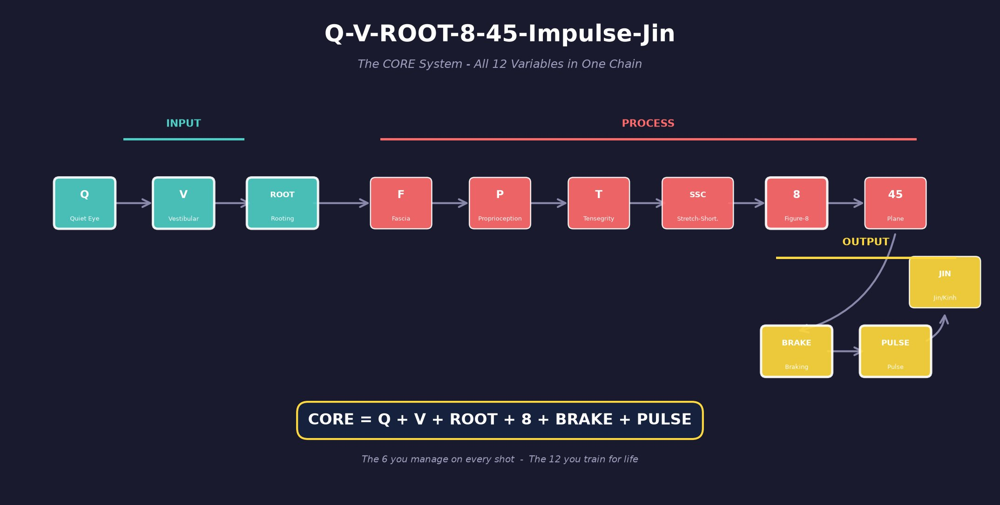

🖼️ Biomechanical Visual Library
Every chapter in the TennisKB system is accompanied by high-density visual reference diagrams (150+ total) illustrating force vectors, tensegrity structures, contact zones, and kinetic chain sequences.
1. CORE Chain Master Diagram
The operational framework integrating Quiet Eye, Vestibular stability, Rooting, Figure-8 loop, Braking, and Pulse release.

2. Visual Diagram Categories
📐 System Architecture
Tensegrity tent models, fascial line spiral paths, Stretch-Shortening Cycle (SSC) curves, and 45° swing plane geometry.
🎾 Stroke Mechanics
3D contact zone maps, racquet head speed vectors, grip index comparisons, and 8-stage serve kinetic chains.
🦶 Footwork & Rooting
Foot tripod ground force connections, 1-inch braking stance, and Hu-Thuc step transitions.
📊 Fault Trees & Diagnostics
Decision trees for shanks, late contact, arming, lifting head, and loss of power under pressure.